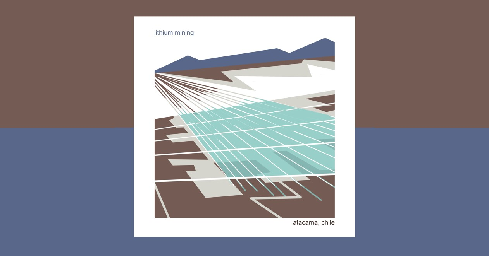

Lithium
6th January 2020
Produced as part of my "Think Slow Act Fast" project
Lithium is a metal found in low concentrations in the earth’s crust and seas. It has recently become highly sought-after for producing Lithium-ion batteries for electric cars, which accounts for 56% of Lithium demand1.
Lithium is most economically obtained by evaporating water from brine in artificial pools treated with chemicals constructed on salt flats (as in Bolivia and Chile), however is also mined from hard ores, as in Australia1. Some believe Lithium could eventually be extracted from seawater.
Geopolitics is the way geography influences power relationships between countries.
As electric car companies prepare for mass manufacture, so too has Lithium mining. This rapid increase in demand has led to geopolitical tensions, as countries race to make sure they have a secure supply. In 2012 a dispute erupted over proposals to effectively limit the export of metals including Lithium from China; China claimed this was for conservation of natural resources; others argued it was designed to control the international trade in Lithium3.
Salar de Uyuni, Bolivia
Area 10,582 sq-km | Elevation 3,656 m | Depth 130 m | Geology: Salt flat.
Bolivia's Lithium Situation
Environmental issues are tightly bound with social, economic and political factors. This is demonstrated in Bolivia, where Lithium is a highly valuable national resource, but much of the indigenous population lives in poverty.
 Above: An impression of lithium mining in Atacama, Chile (credit: the author) Click to view full-size{kind=link}
Bolivia is an ex-Spanish colony and inequality persists between indigenous populations living predominantly in rural areas and those of European descent mainly in urban areas4. Poverty has dropped from 60% in 2002 to 35% in 20186 and Lithium seems like an opportunity to close inequality and overcome poverty.
Bolivia has big plans for Lithium - rather than following the public-private development models of Argentina and Chile, leader Evo Morales proclaimed it would be “100% Estatal!” (nationalised). The profitability of this economic model for foreign investors being limited, it took until 2018 to find an international partner with the ability and capital to realise the development. Contrary to the “100% Estatal” policy, the German ATI Systems took a 49% stake in the operation for $1.3bn6,8.
In October 2019 Bolivia’s leader of 14 years and the first indigenous leader, Evo Morales, was forced to escape the country to Mexico and then Argentina7. This followed a military coup backed by allegations of electoral corruption made by the OAS (Organisation of American States), foreign pressure from the US and Brazil, and public demonstrations7.
Since Morales’ departure the temporary government has issued his arrest warrant and decriminalised military force against protesters. As protest and counter-protest persist along ethnic and class lines, 17 indigenous protesters have been killed in pro-Morales actions7.
As Bolivia prepares for a re-election, to be overseen by the OAS, issues of inequality, poverty and racial injustice are on the surface. And looming too is the future for Bolivia’s Lithium. The US currently brings 49% of its Lithium imports from Chile and 48% from Argentina1 – there is no doubt that it will be eager to add Bolivian Lithium to its supplies. But will the exploitation of Bolivia’s huge Lithium resource come on its terms or those of international capitalists? And will the opportunity for employment and education be shared with the indigenous people of Bolivia, as Morales envisaged, or will a ‘colonialist’ extraction result?